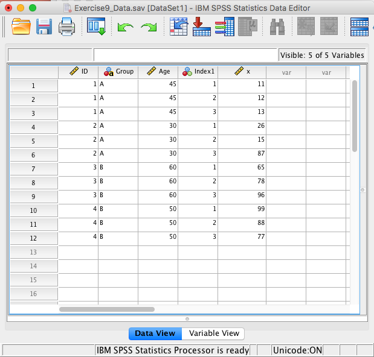

Chapter 7 # Exercise 6 Solution
Convert Exercise6_Data from “Wide” format to “Long” format
Solution:
Open Exercise6_Data
Select Data - Restructure to open the Wizard
Select “Restructure selected variables into cases” then “Next”

- How many variable groups to you want to restructure? Select “One” then “Next”

Case Group Identification should be changed to “Use selected variable” and the variable should be the ID variable
Variables to be transposed: Move the X variables over (X1, X2, X3)
Fixed Variable(s): Move Group and Age over
Select “Next”

- How many index variables do you want to create? Select “one” then “Next”

- What kind of index values? Select “Sequential Numbers” then select “Next”

Handling of Variables not Selected: Select “Keep and treat as fixed variable(s)”
System Missing or Blank Values in All Transposed Variables: Select “Create a case in the new file”
Leave “Case Count Variable” unchecked
Select “Next”

What do you want to do? Select “Restructure the data now”. In the future you may want to keep the syntax.
Select “Finish”
The following message appears, click “OK”
Macintosh HD:Users:jerrick:Desktop:Screen Shot 2017-01-06 at 11.02.44 AM.png
Inspect the data (and change “trans1” to “X”)
Macintosh HD:Users:jerrick:Desktop:Screen Shot 2017-01-06 at 11.03.50 AM.png